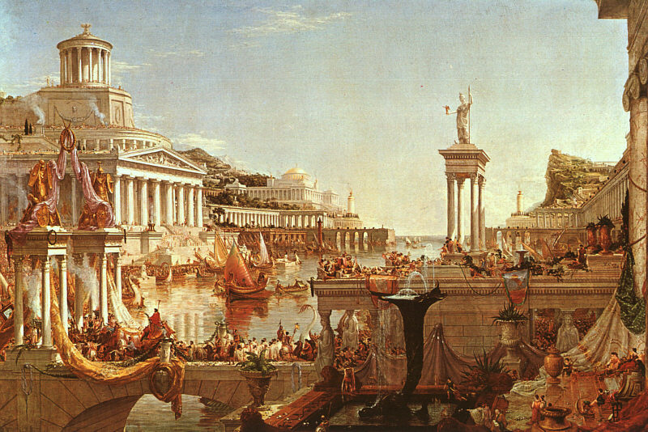
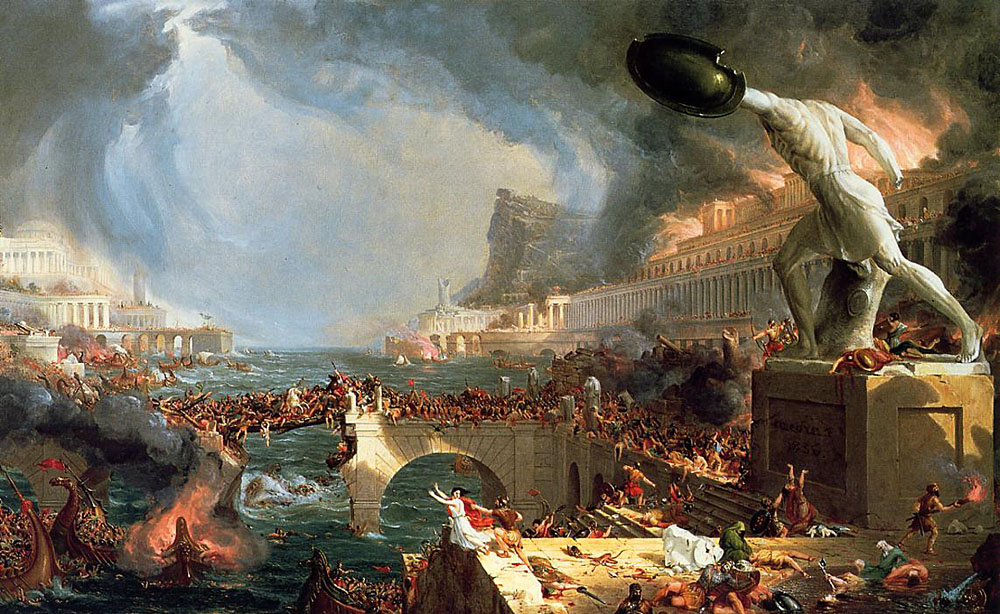
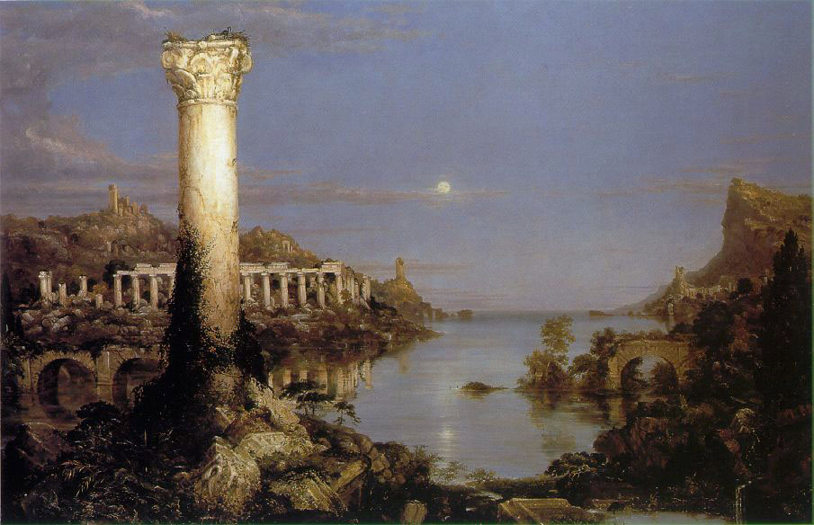

帝國興衰之路與霍爾木茲海峽
歷史不斷重演，尤其當帝國忘記如何說「夠了」的時候
湯瑪斯·科爾（Thomas Cole）的《帝國興衰之路》（The Course of Empire，1833–1836）是一套五幅畫作，描繪一個虛構文明從興起至覆滅的完整生命週期。第一幅《野蠻狀態》（The Savage State）呈現黎明時分的荒野與原始獵人。我們看到社會的雛形，生活艱苦，人們開始以互利合作讓日子好過一點。
(The Savage State by Thomas Cole, https://commons.wikimedia.org/w/index.php?curid=182985)
第二幅《田園牧歌狀態》（The Arcadian or Pastoral State）轉為平靜的田野，牧羊人與早期農業。
(The Arcadian or Pastoral State by Thomas Cole, https://commons.wikimedia.org/w/index.php?curid=182982)
第三幅《盛極的帝國》（The Consummation of Empire）展示帝國輝煌的場景 - 大理石神殿、擁擠的港灣、遊行隊伍，以及正午陽光下的英雄。

(The Consummation of Empire by Thomas Cole, https://commons.wikimedia.org/w/index.php?curid=183030)
接著是《毀滅》（Destruction）：火焰、外敵入侵、戰爭與動亂。

(Destruction by Thomas Cole, https://commons.wikimedia.org/w/index.php?curid=183045)
最後一幅《荒涼》（Desolation）顯現寧靜的黃昏，一切又重新開始。

(Desolation by Thomas Cole, https://commons.wikimedia.org/w/index.php?curid=183020)
只有畫中的山在每幅畫中都屹立不動，一切每一刻都在變。科爾的訊息很清楚：帝國興起，因自身成功而變得臃腫，然後倒下。
帝國一個個此起彼落，誰還記得古代呂底亞？還有他們的語言與文化？西元前六世紀，它雄霸安納托利亞（今小亞細亞）。其國王克羅伊斯（Croesus）據稱是當時最富有的人。他的財富來自帕克托魯斯河（Pactolus，今日土耳其西部的薩爾特恰伊河，位於馬尼薩省薩迪斯廢墟附近）。傳說國王邁達斯（King Midas）曾在這條河中洗去他的「點金詛」- 一個會把他所觸碰的一切（包括食物）都變成黃金的詛咒 - 令河床鋪滿著閃爍的金和銀。
對克羅伊斯來說，一切都很順遂，直到西元前550年。他擔心居魯士大帝領導下的阿契美尼德帝國崛起，挑戰他的地位，於是向德爾斐神諭（the Oracle at Delphi）請示是否應先發制人。神諭的隱晦回覆是：「渡過哈里斯河將摧毀一個偉大的帝國。」克羅伊斯一向樂觀，以為指被摧毀的是波斯。但實際指的是呂底亞。呂底亞徹底地被摧毀了。
克羅伊斯的埋葬地？無人知曉。他的帝國？噗一聲煙消雲散了。
羅馬走的是同一條道路 - 開始時卑微，其後發展成輝煌的帝國，然後過度擴張，蠻族入侵，最後走向漫長混亂的黃昏歲月。這個模式不斷重複。
美國正重複類似的步伐。它在十九世紀以一個誠實、充滿活力且相對謙遜的共和國起步。第一次世界大戰後取得領先地位。到二十世紀中葉，它已是強大，自豪，且廣受敬仰的霸權。如今頭髮花白、關節酸痛，這位老人卻仍堅持自己還是二十五歲。
川普注定要加速美國的衰落。他幾乎制裁所有沒有按時為他鼓掌的人。盟友因維護自身利益而被他訓誡，威脅，和被加徵關稅。他對格陵蘭和加拿大等地區提出突兀、單方面的要求和領土威脅，並用毫無外交體面的語言向外國元首施壓。
如今他對伊朗進行攻擊，卻無法保持霍爾木茲海峽暢通。這一幕與1956年英國的蘇伊士運河慘敗極為相似。當年埃及總統納賽爾將蘇伊士運河國有化時，英國（聯同法國與以色列）發動軍事行動試圖奪回。入侵在戰術上成功，在戰略上卻徹底失敗。美國拒絕支持，英鎊承壓，國際譴責迫使它屈辱撤軍。首相艾登辭職。這一事件向世界宣告：英國已不再是能獨當一面的全球霸權。曾經是日不落的大英帝國，太陽明顯在落下。
美國無力重新開放霍爾木茲海峽，傳達的正是同樣的訊息。對親美的海灣國家而言，駐紮美軍基地或依賴美國保護，如今看起來不但不安全，兼且是自找麻煩。美國先前部署的軍事設施遠未能嚇阻對手，反而一再引來報復性攻擊。當地機場、港口與城市變成方便的靶子。原本以為安全得到保障，現在卻是把關鍵基礎設施、經濟建設與平民推上火線。美國能夠和願意確保石油暢通與區域安全的假設已不再可靠，靠近美國看起來愈來愈危險。
海灣的麻煩不會只停留在海灣。所有人都承擔被推高的能源價格，其他國家已開始懷疑美國安全承諾的價值。
美國帝國明顯過度擴張。數字說明一切。美國僅國防部一年就花費約九千億美元，超過其後十個國家的總和，卻仍無法控制霍爾木茲海峽。它在九一一後的全球反恐戰爭中已花費超過八兆美元，但聖戰恐怖主義仍不斷擴散。與此同時，聯邦政府的總負債（已撥款與未撥款）超過一百二十兆美元。即使在非衰退年份，年度赤字仍接近兩兆美元。稅收根本無法覆蓋福利計劃、現有債務利息與全球軍事存在的開支。
隨著債務持續攀升，利息成本排擠其他一切開支，印錢是 入不敷支的唯一解決方法。每一輪新的貨幣量寬，都讓人對美國紙幣長期價值的信心下降。信心是極其脆弱的東西，我們不該經常去試探它。當它最終破裂時，債券市場就會崩潰，那就是吹笛人來收款的時候了。
這篇文章也已發佈在我的Substack網站上
免責聲明
本部落格所提供之內容僅供資訊與教育用途，並不構成任何財務、投資或專業建議。本人並非持牌財務顧問；文中所表達之觀點僅屬個人基於邏輯思考與一般觀察所得的意見。金融市場本質上具有高度波動性與不可預測性，過往表現並不代表未來結果。
強烈建議讀者在作出任何投資或財務決策前，應自行進行獨立研究、充分的調查分析，並諮詢合格的專業人士。透過存取及使用本部落格的資料，您即承認並同意作者對於因依賴此處所載資訊而可能導致的任何損失、損害或不利結果，概不承擔任何責任或義務。